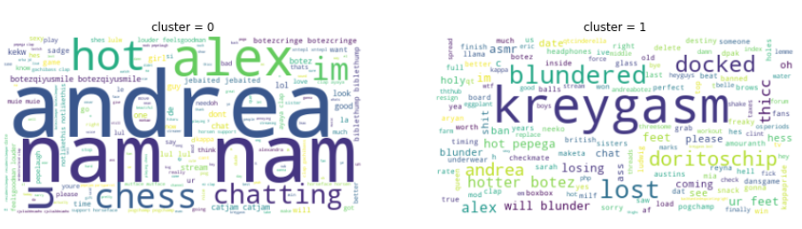

Twitch Chat Bot for Botezlive Channel
This bot was developed to automatically moderate chat for the Botezlive twitch channel. It is currently in use on the Botezlive channel and deletes messages based on the trained classifier.
Data Processing
Chat data was logged using the Chatty program. Messages were labeled as "1" if they had been deleted or timed out by a human moderator and "0" otherwise. The streamers for the channel prefer to keep chat not sexual and focused on chess so moderation is fairly strict with regard to comments on appearance.
Modeling
Vectorization of messages was done with TF-IDF and classification was done using a linear SVM. Other classifiers were tried (e.g. Logistic Regression, Decision Trees, Random Forest) but SVM performed the best. This performance was assessed with confusion matrices, precison/recall scores, and brier loss.
Clustering
The model is retrained regularly on new chat logs. The deletions made by the classifier are reviewed and kept or reclassified manually. It would be nice to have an unsupervised way of updating the classifier. Clustering was explored in this regard.
Principal component analysis was used on TF-IDF vectorized text and then clustered using KMeans and DBSCAN. Correlations for the principal components is shown below.
An example of KMeans clustering with randomly selected PCA dimensions is shown below.
The word cloud for the KMeans clusters is shown below.

This clustering is reasonable but it misses some key things compared to the original classification. An example of DBSCAN clustering with randomly selected PCA dimensions is shown below.
The word clouds for the first 10 dbscan clusters are shown below.
This clustering also misses the mark and it's unclear how one would automatically group clusters corresponding to the desired binary classification.
The following shows comparisons between (1) points with original classifications, (2) points with KMeans cluster labels, and (3) points with DBSCAN cluster labels.